前言
lua5.4.4元表现在已经加到了25个类型
简单来说元方法的作用是因为使用lua原始语法不能做到所需的要求比如对两个table进行加减乘除,或者我在退出作用域的时候想要快速的清除自己自定义的一些数据,等等其他一些特殊需求
如果大家对C++的重载运算符比较熟悉,或许能够更加清晰的了解元表的作用,其实两者有异曲同工的作用
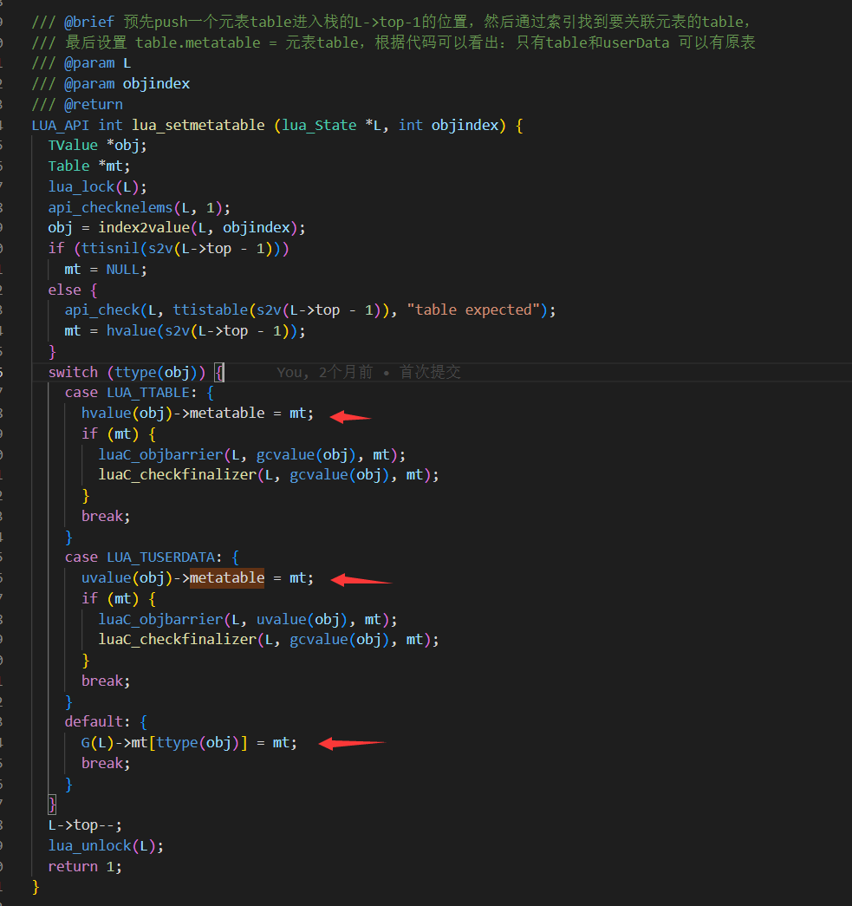
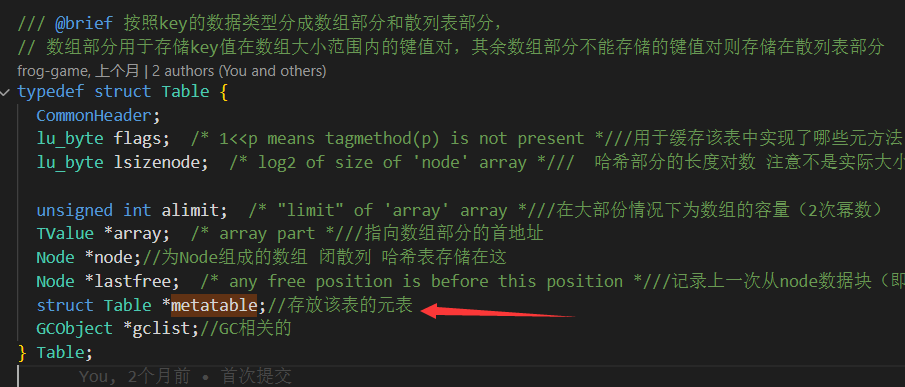
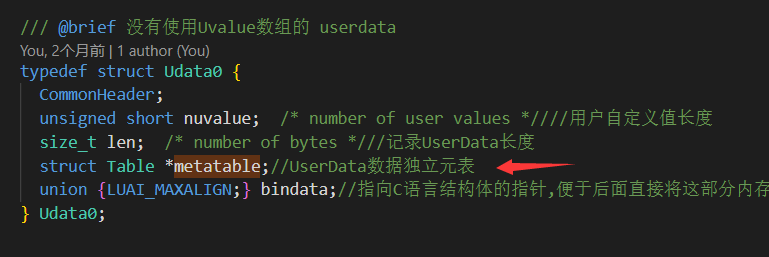
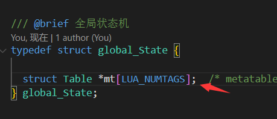
从上面的源代码我们可以分析出
lua中的每个值都可以拥有一个元表table和userdata各自拥有自己独立的元表- 非
table和userdata的元表统统放到了global_State的mt数组当中
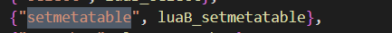
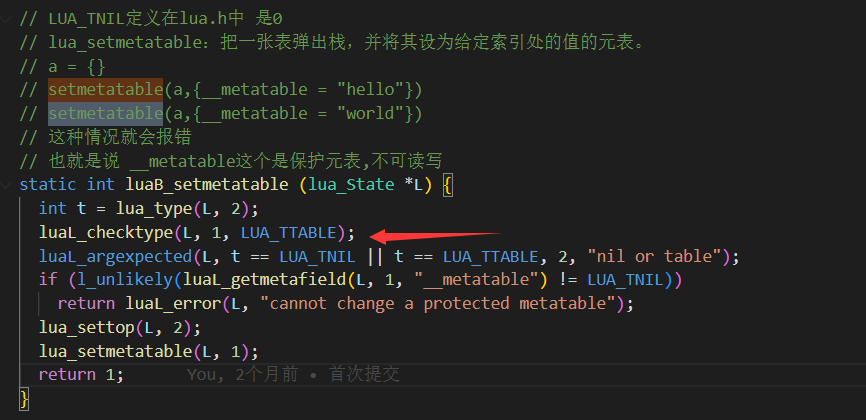
- 从对外
lua层的API接口来看,我们能看到在lua层只能按设置table的元表,而其他类型的元表设置并没有对外的lua层API接口,lua中提供的两个参数如下 - setmetatable(table,metatable)
- getmetatable(table)
- 其他类型设置元表只能通过c代码提供的
API接口创建元表,比如luaL_newmetatable
lua层setmetatable和getmetatable使用方法
首先我们看一下C代码是怎么实现的
static const luaL_Reg base_funcs[] = {
{"getmetatable", luaB_getmetatable},
{"setmetatable", luaB_setmetatable},
};
/// @brief
// lua_getmetatable：如果该索引处的值有元表,则将其元表压栈,返回 1 。 否则不会将任何东西入栈,返回 0 。
// luaL_getmetafield：将索引 obj 处对象的元表中 __metatable 域的值压栈。
// 如果该对象没有元表,或是该元表没有相关域, 此函数什么也不会压栈并返回 LUA_TNIL。
/// @param L
/// @return
static int luaB_getmetatable (lua_State *L) {
luaL_checkany(L, 1);
if (!lua_getmetatable(L, 1)) {
lua_pushnil(L);
return 1; /* no metatable */
}
luaL_getmetafield(L, 1, "__metatable");
return 1; /* returns either __metatable field (if present) or metatable */
}
// LUA_TNIL定义在lua.h中 是0
// lua_setmetatable：把一张表弹出栈,并将其设为给定索引处的值的元表。
// a = {}
// setmetatable(a,{__metatable = "hello"})
// setmetatable(a,{__metatable = "world"})
// 这种情况就会报错
// 也就是说 __metatable这个是保护元表,不可读写
static int luaB_setmetatable (lua_State *L) {
int t = lua_type(L, 2);
luaL_checktype(L, 1, LUA_TTABLE);
luaL_argexpected(L, t == LUA_TNIL || t == LUA_TTABLE, 2, "nil or table");
if (l_unlikely(luaL_getmetafield(L, 1, "__metatable") != LUA_TNIL))
return luaL_error(L, "cannot change a protected metatable");
lua_settop(L, 2);
lua_setmetatable(L, 1);
return 1;
}
-
从源码看出当我们在
lua层第一次调用getmetatable(table)的时候如果table没有设置元表就会返回一个nillocal t = getmetatable({}) print(t)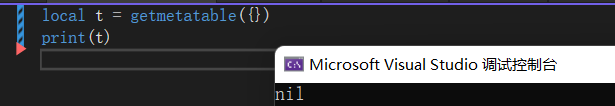
-
如果设置的是普通元表,那么就会直接返回普通元表
local tt = { } local t2 = { } print("m1 table addr:", t2) setmetatable(tt, t2) print("getmetatable addr:", getmetatable(tt))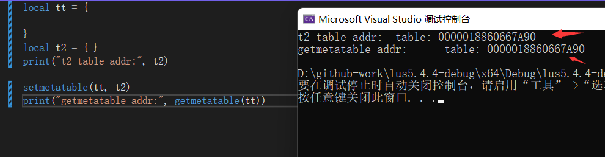
从这个示例的
lua代码中我们可以看出t2 table的地址是0000018860667A90而getmetatable(tt)的地址也是0000018860667A90所以从这里我们可以看出其实这代码是lua tt table表里面的c结构体Table里面的metatable指针指向了lua t2 tabletypedef struct Table { struct Table *metatable;//这个地方如果设置了元表就会通过这个指针指向设置的元表 } Table;示意图如下
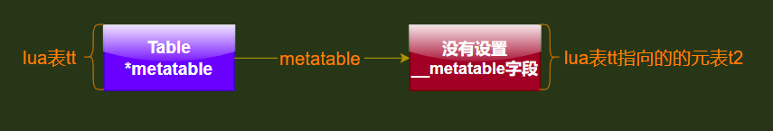
-
如果设置了
__metatable字段那么就会直接返回于这个字段相关的值local tt = { } local t2 = { ["__metatable"] = "hello world!!!" } setmetatable(tt, t2) print("getmetatable:", getmetatable(tt))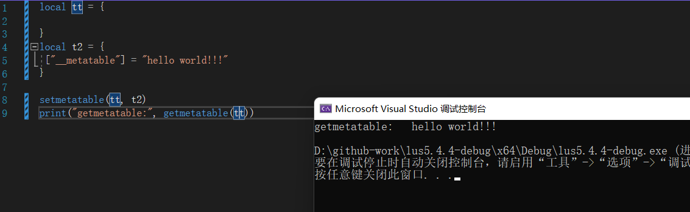
从上我们可以看出如果
t2表里面的__metatable的字段设置内容那么就会直接输出__metatable的字段内容示意图如下
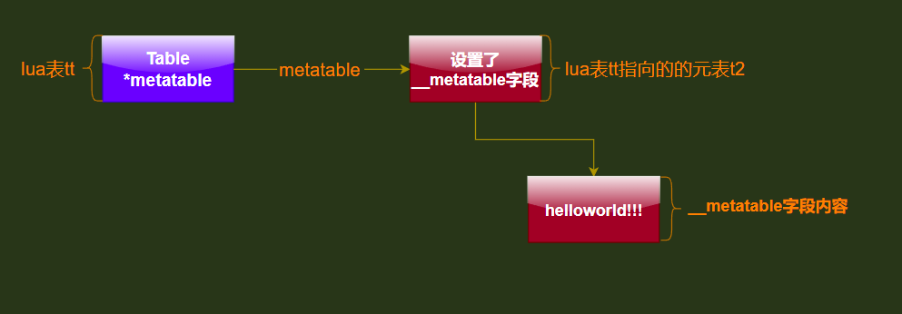
-
当然除了这个我们还要注意的是
__metatable字段是有保护机制的不可重写a = {} setmetatable(a,{__metatable = "hello"}) setmetatable(a,{__metatable = "world"})执行结果
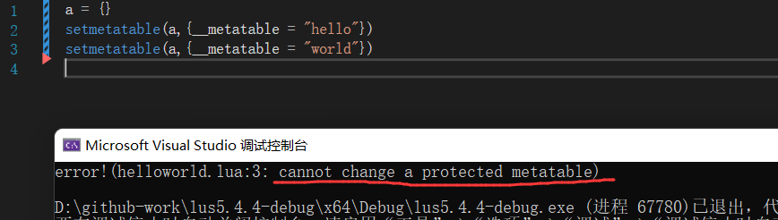
可以看到此处报错了输出了
cannot change a protected metatable错误提示 -
还有一点是元表其实是可以共享的比如下面的例子
local tt = { } local tt2 = { } local t2 = { ["__metatable"] = "hello world" } setmetatable(tt, t2) setmetatable(tt2, t2) print("get tt metatable :", getmetatable(tt)) print("get tt2 metatable :", getmetatable(tt2))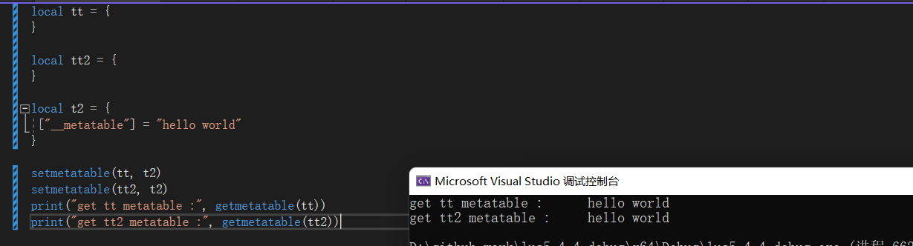
可以看到
tt和tt2指向的是同一个元表t2,然后同时输出了相同的内容hello world大概示意图如下
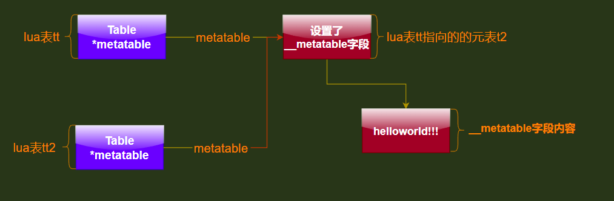
C层调用元表
其实在之前解释lua源码类型中的full userdata的时候其实就描述过了C是怎么使用luaL_newmetatable luaL_getmetatable lua_setmetatable 来是full userdata起作用的
//c文件
//#include <string.h>
extern "C" {
#include "lua.h"
#include "lauxlib.h"
#include "lualib.h"
}
#include <iostream>
using namespace std;
static struct StudentTag
{
char* strName; // 学生姓名
}T;
static int CFunStudent(lua_State* L)
{
size_t iBytes = sizeof(struct StudentTag);
struct StudentTag* pStudent;
pStudent = (struct StudentTag*)lua_newuserdata(L, iBytes);
//设置元表
luaL_getmetatable(L, "StudentMetatable");
lua_setmetatable(L, -2);
return 1;
}
static int GetName(lua_State* L)
{
struct StudentTag* pStudent = (struct StudentTag*)luaL_checkudata(L, 1, "StudentMetatable");
lua_pushstring(L, pStudent->strName);
return 1;
}
static int SetName(lua_State* L)
{
// 第一个参数是userdata
struct StudentTag* pStudent = (struct StudentTag*)luaL_checkudata(L, 1, "StudentMetatable");
// 第二个参数是一个字符串
const char* pName = luaL_checkstring(L, 2);
luaL_argcheck(L, pName != NULL && pName != "", 2, "Wrong Parameter");
pStudent->strName = (char*)pName;
return 0;
}
static luaL_Reg arrayFunc_meta[] =
{
{ "getName", GetName },
{ "setName", SetName },
{ NULL, NULL }
};
static luaL_Reg arrayFunc[] =
{
{ "new", Student},
{ NULL, NULL }
};
extern "C" _declspec(dllexport) int luaopen_mytestlib(lua_State *L)
{
// 创建一个新的元表
luaL_newmetatable(L, "StudentMetatable");
// 元表.__index = 元表
lua_pushvalue(L, -1);
lua_setfield(L, -2, "__index");
luaL_setfuncs(L, arrayFunc_meta, 0);
luaL_newlib(L, arrayFunc);
lua_pushvalue(L, -1);
lua_setglobal(L, "StudentModule");
return 1;
}
-- lua 文件
require "mytestlib"
local objStudent = StudentModule.new()
objStudent:setName("11111")
local strName = objStudent:getName()
print(strName)
for k,v in pairs(getmetatable(objStudent)) do
print(tostring(k),tostring(v))
end
大概流程图如下
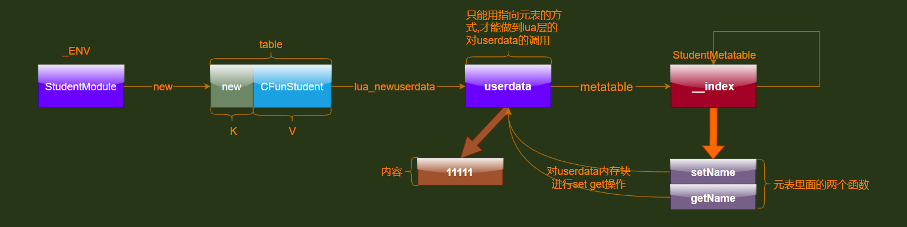
- 首先在
ENV里面注册了模块studentModule,等价于_ENV["studentModule"] = table - 然后这个
table里面存有lua的接口new和指向c层函数指针的CFunstudent - 通过函数指针的
CFunstudent指向的CFunstudent函数我们创建了一块内存区域 - 因为
userdata也和table结构一样都能设置元表,也就是说可以通过元表,能给lua层提供接口来操作这块userdata - 所以后面这部分就是创建元表,并通过元表内部的
setName和getName函数对userdata进行了操作,有点像我们不能很方便去直接控制电视机的电路板[userdata],所以发明了遥控器[元表],方便用户[lua层]通过遥控器控制电视机换台什么的操作
设置元方法
| C枚举 | 元方法名字 | 解释 |
|---|---|---|
| TM_INDEX | __index | 索引table[key] 访问表中不存在的值 |
| TM_NEWINDEX | __newindex | 索引赋值 table[key] = value 对表中不存在的值进行赋值 |
| TM_GC | __gc | 当对象被gc回收时将会调用gc元方法 |
| TM_MODE | __mode | 弱引用表 |
| TM_LEN | __len | 对应运算符"#" 取对象长度 |
| TM_EQ | __eq | 对应运算符"==“比较两个对象是否相等 |
| TM_ADD | __add | 对应运算符”+"（加法）操作 |
| TM_SUB | __sub | 对应的运算符 ‘-’（减法）操作 |
| TM_MUL | __mul | 对应运算符"*"（乘法）操作 |
| TM_MOD | __mod | 对应运算符"%"（取模）操作 |
| TM_POW | __pow | 对应运算符"^"（次方）操作 |
| TM_DIV | __div | 对应运算符"/"（除法）操作 |
| TM_IDIV | __idiv | 对应运算符"//"（向下取整除法）操作 |
| TM_BAND | __band | 对应运算符"&"（按位与）操作 |
| TM_BOR | __bor | 对应运算符"|"（按位或）操作 |
| TM_BXOR | __bxor | 对应运算符"^"（按位异或）操作 |
| TM_SHL | __shl | 对应运算符"«"（左移）操作 |
| TM_SHR | __shr | 对应运算符"»"（右移）操作 |
| TM_UNM | __unm | 对应的运算符 ‘-’（取负）操作 |
| TM_BNOT | __bnot | 对应运算符"~"（按位非）操作 |
| TM_LT | __lt | 对应的运算符 ‘<’（小于）操作 |
| TM_LE | __le | 对应的运算符 ‘<=’（小于等于）操作 |
| TM_CONCAT | __concat | 对应的运算符 ‘..’(连接）操作 |
| TM_CALL | __call | 函数调用操作 func(args) |
| TM_CLOSE | __close | 被标记为to-be-closed的局部变量 会在超出它的作用域时,调用它的__closed元方法 |
__index
举个现实中的例子,比如你现在去街上买鞋子,来到了鞋柜,你非常喜欢这双鞋子,但是这家店里面没有这双款式的鞋子了,一般来说店家都会说,不着急你等等,我去其他分店帮你调配一下鞋子,您是等等还是我邮寄给你过去呢
其实这快,当店家没有鞋子的时候,去其他分店调配和lua的__index很像
- 首先我作为店家今天库存只有
12号和13号款式的鞋子,lua伪代码如下
local myShoeStore =
{
num12_shoe = "Size 12 shoes",--12号鞋子
num13_shoe = "Size 13 shoes",--13号鞋子
}
这个时候来了个小红问问有没有20号款式的鞋子,说非常喜欢这样款式的,作为店主首先你查了下自己的库存
local myShoeStore =
{
num12_shoe = "Size 12 shoes",--12号鞋子
num13_shoe = "Size 13 shoes",--13号鞋子
}
print(myShoeStore.num20_shoe)
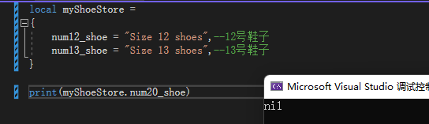
我们可以看到返回了nil,说明我现在的店铺已经没有20号鞋子的库存了,为了留住顾客,你只能去分店查找,毕竟一单生意一份收入,挣钱嘛不寒碜,那怎么样才能和分店挂钩起来,让我能方便的查找呢,相信聪明的你肯定想到了__index元方法,没错就是它
local myShoeStore =
{
num12_shoe = "Size 12 shoes",--12号鞋子
num13_shoe = "Size 13 shoes",--13号鞋子
}
local myBranchShoeStore = {
__index = {--关键地方,靠的就是__index来进行关联查找
num20_shoe = "Size 20 shoes",--20号鞋子
}
}
setmetatable(myShoeStore,myBranchShoeStore);--关键地方,这里等价于把两家店给串连起来了
print(myShoeStore.num20_shoe)
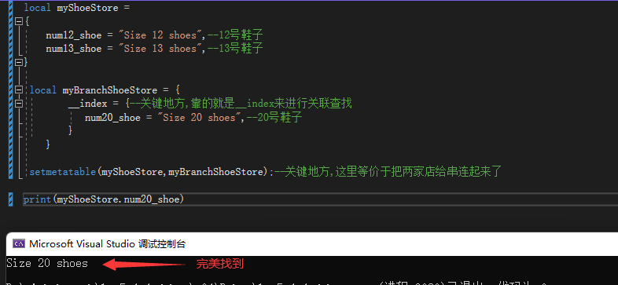
可以看到上图的输出,完美找到了20号的鞋子,留下了这笔生意,当然如果你分店更多,那么你可以一直用__index元方法串连下去,直到你找到你想要的数据
总结:定义了在table中通过给定的key找到的value为nil时怎么办的行为
下面我们在进行一下关键源码点分析
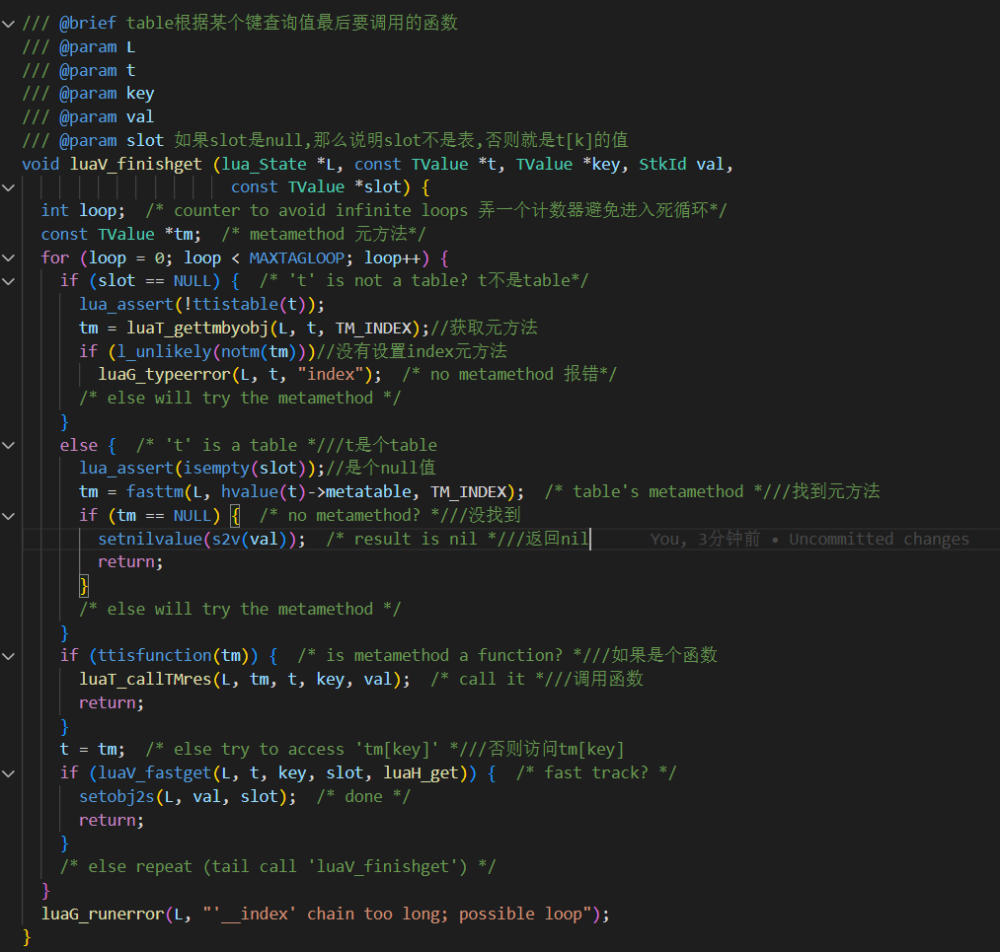
上面的源码就是设置__index元方法的核心逻辑地方
- 首先第一步会判断
slot是不是null,如果是那么就说明t变量不是table,就直接报错跳过 - 第二步如果
slot不是null那说明t是一个table,这个时候我们通过TM_INDEX索引找到table对应的metatable元方法 - 得到了元方法指针以后,我们在判断一下如果指针是
null那么就说明没有设置元方法,那么只要直接返回nil就可以了 - 走到了这一步了,那么说明我们找到了
TM_INDEX对应的元方法了,注意哈,重点来了- 如果元方法是个函数,那么就会调用
luaT_callTMres把函数入栈,并且把结果求出来,当做查询结果 - 如果元方法是个
table,那么就直接求元素下标为key的table内容,也就是tm[key]指向的内容 - 如果上面都不满足,既不是表,又不是函数,就直接返回
slot为null,结果为0
- 如果元方法是个函数,那么就会调用
综合总结
lua代码从表t中查找键k时,lua处理流程如下:
-
t中是否有k,有则直接返回值,否则进行第二步 -
t是否有元表, 无则返回nil, 有则进行第三步 -
t的元表是否有__index元方法,没有直接返回nil,有则查找__index指向的表或对应的函数,把表中或者函数的返回值当做结果
到此为止我们通过源码知道了__index内幕到底做了啥,那为了正确性,我们写点lua源码验证一下
__index元方法设置的不是table,或者函数时候
local myShoeStore =
{
num12_shoe = "Size 12 shoes",--12号鞋子
num13_shoe = "Size 13 shoes",--13号鞋子
}
local myBranchShoeStore = {
__index = 11111 -- 注意这个地方的写法
}
setmetatable(myShoeStore,myBranchShoeStore);--关键地方,这里等价于把两家店给串连起来了
print(myShoeStore.num20_shoe)
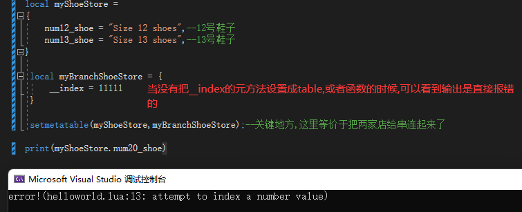
我们可以看到当没有把__index的元方法设置成table,或者函数的时候,可以看到输出是直接报错的
__index元方法设置的是table
local myShoeStore =
{
num12_shoe = "Size 12 shoes",--12号鞋子
num13_shoe = "Size 13 shoes",--13号鞋子
}
local myBranchShoeStore = {
__index = {--关键地方,靠的就是__index来进行关联查找
num20_shoe = "Size 20 shoes",--20号鞋子
}
}
setmetatable(myShoeStore,myBranchShoeStore);--关键地方,这里等价于把两家店给串连起来了
print(myShoeStore.num20_shoe)
__index元方法设置的是函数
local myShoeStore =
{
num12_shoe = "Size 12 shoes",--12号鞋子
num13_shoe = "Size 13 shoes",--13号鞋子
}
local myBranchShoeStore = {
__index = function(table,key,key)
print(table)
print(key)
return "Size 20 shoes"
end
}
setmetatable(myShoeStore,myBranchShoeStore);--关键地方,这里等价于把两家店给串连起来了
print(myShoeStore.num20_shoe)
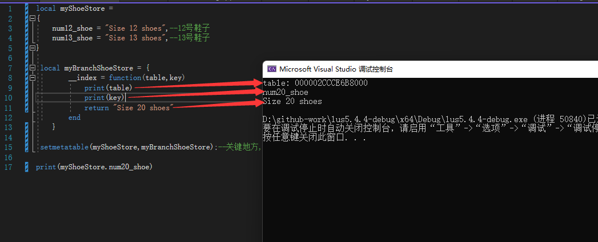
从上面我们可以看出如果在myShoeStore中找不到num20_shoe,那么就会从他的元表myBranchShoeStore中去查找是不是有设置元方法__index,发现__index元方法设置的是个函数,还有能看到这个函数有两个形参,一个是table,一个是key正好对应的是myShoeStore和num20_shoe字段,最后还能看到返回值"Size 20 shoes"也作为了结果返回
为什么有些地方__index元方法要指向自己
在讲解前请先熟悉这个流程
lua代码从表t中查找键k时,lua处理流程如下:
-
t中是否有k,有则直接返回值,否则进行第二步 -
t是否有元表, 无则返回nil, 有则进行第三步 -
t的元表是否有__index元方法,没有直接返回nil,有则查找__index指向的表或对应的函数,把表中或者函数的返回值当做结果
a. 当我们使用__index元方法要指向自己的方法时候
---当我们使用__index元方法要指向自己的方法时候
local class = {}
function class:new()
self.__index = self
return setmetatable( {}, self )
end
function class:get_num20_shoe()
print("Size 20 shoes")
end
--当我们第一次new class的时候,发现可以输出get_num20_shoe函数的内容
local myshoestrore = class:new()
myshoestrore.get_num20_shoe()
-- 当我们在此调用通过myshoestroe new class的时候,发现还是能继续输出get_num20_shoe函数里面的内容
local myBranchShoeStore = myshoestrore:new()
myBranchShoeStore.get_num20_shoe()
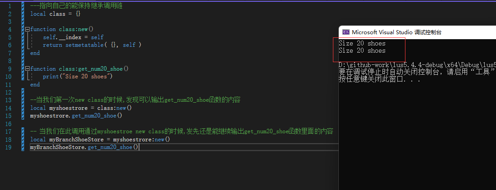
b. 当我们不使用__index元方法要指向自己的方法时
---当我们不使用__index元方法要指向自己的方法时候
local class = {}
class.__index = class
function class:new()
return setmetatable( {}, self )
end
function class:get_num20_shoe()
print("Size 20 shoes")
end
--当我们第一次new class的时候,发现可以输出get_num20_shoe函数的内容
local myshoestrore = class:new()
myshoestrore.get_num20_shoe()
-- 当我们在此调用通过myshoestroe new class的时候,发现就不能在继续输出get_num20_shoe函数里面的内容了,主要原因还是
-- myshoestrore里面是没有__index元方法的,导致继承链断了
local myBranchShoeStore = myshoestrore:new()
myBranchShoeStore.get_num20_shoe()
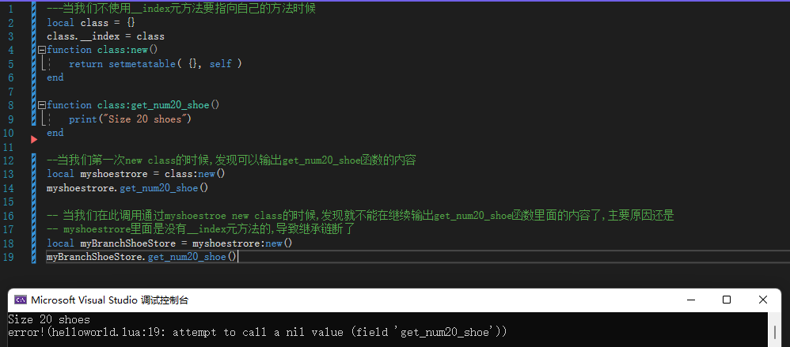
__index实现的面向对象
这里贴一下云风大神写的一个lua面向对象实现的代码
local _class = {}
-- super 为基类
function class(super)
local class_type = {} --类模板
class_type.ctor = false -- 构造函数
class_type.super = super --赋值基类
class_type.staticFun = {} --静态函数
class_type.new = function(...) -- new方法成员
local obj = {}
do
local create --嵌套调用主要是为了能掉到基类ctor
create = function(c, ...)
if c.super then
create(c.super, ...) --调用基类ctor
end
if c.ctor then
c.ctor(obj, ...) --调用构造
end
end
create(class_type, ...)
end
setmetatable(obj, {__index = _class[class_type]}) --利用元表__index设置保证 obj继承自_class[class_type]
return obj
end
local vtbl = {} --vtbl理解为类容器也就是存类的成员,函数等等
vtbl.super = _class[super]
_class[class_type] = vtbl
setmetatable( -- 有新的成员存到vtbl中
class_type,
{
__newindex = function(t, k, v)
vtbl[k] = v
end
}
)
if super then
setmetatable( -- 如果子类有成员直接返回,子类没有返回基类的成员
vtbl,
{
__index = function(t, k)
local ret = _class[super][k]
vtbl[k] = ret
return ret
end
}
)
end
return class_type
end
具体实现原理请仔细查看源码注释吧,这里就不详细解释了,相信聪明的你一定能看出名堂
如果想更复杂的lua实现class面向对象的代码方法,可以去这个地址喵喵,这个写的还是很不错的,里面有强弱表相关,不到200行代码就实现了,类,继承,虚函数,私有变量,table混合使用等等功能
__newindex
如果说__index字段是在访问表中不存在的值是执行的查找操作的话[get]
那么__nexindex字段则是在对表中不存在的值进行的赋值操作[set]
当然你也可以给你的table去一个的赋值创建变量比如像下面lua代码一样,为了能够留住顾客我费劲通过各种方法在我的店铺创建出来了一双20号的鞋子
local myShoeStore =
{
num12_shoe = "Size 12 shoes",--12号鞋子
num13_shoe = "Size 13 shoes",--13号鞋子
}
myShoeStore.num20_shoe = "Size 20 shoes" --费劲巴拉的在自己店铺弄出了一双20号款式的鞋子
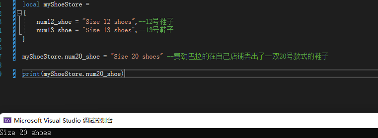
虽然20号鞋子创建出来了,但是大家发现没有我是总店按道理来说总店不是工厂,而应该让工厂去履行这个职责,这样专人做转事,保值保量,又快又好,所以我们又对代码做了如下处理
local myShoeStore =
{
num12_shoe = "Size 12 shoes",--12号鞋子
num13_shoe = "Size 13 shoes",--13号鞋子
}
local myShoeFactory = {
__newindex = function(table, key, value) --关键地方,靠的就是__newindex来进行鞋子的创建
rawset(table, key, value);
end
}
setmetatable(myShoeStore,myShoeFactory);--关键地方,这里等价于把两家店给串连起来了
--- 有元表的情况下设置值,这样等价于我把本来要在主店创建20号鞋子的任务,丢给我的鞋子工厂去处理了
myShoeStore.num20_shoe = "Size 20 shoes"
print(myShoeStore.num20_shoe)
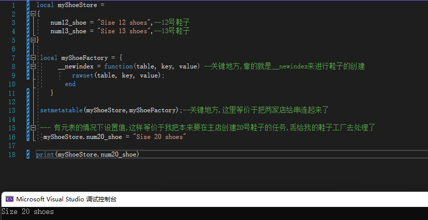
通过上面的处理等价于我把本来要在主店创建20号鞋子的任务,丢给我的鞋子工厂myShoeFactory去处理了
接下来我们来看看源码
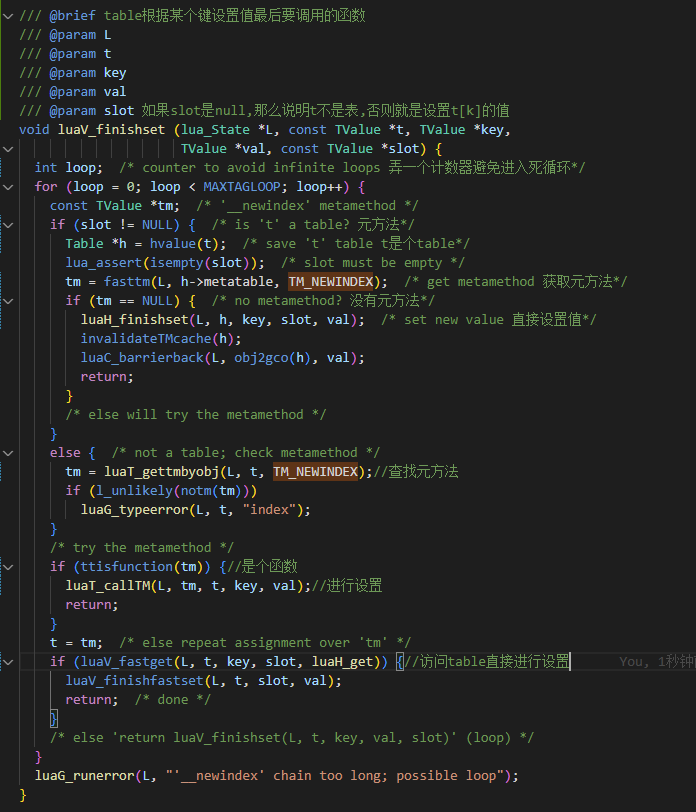
我们可以看到大概流程如下
- t中是否有元方法,没有的话直接设置值,否则进行第二步
- 元方法指向的函数,直接通过
luaT_callTM函数接口进行设置,否则进行第三步 - 如果元方法指向是个
table,那么就直接回去table对应的值,进行设置,否则进行第四步 - 如果元方法指向不是
table也不是函数,那么就直接报错
__newindex设置的不是table也不是函数的时候
local myShoeStore =
{
num12_shoe = "Size 12 shoes",--12号鞋子
num13_shoe = "Size 13 shoes",--13号鞋子
}
local myShoeFactory = {
__newindex = 11111
}
setmetatable(myShoeStore,myShoeFactory);--关键地方,这里等价于把两家店给串连起来了
--- 设置的不是table也不是函数的时候
myShoeStore.num20_shoe = "Size 20 shoes"
print(myShoeStore.num20_shoe)
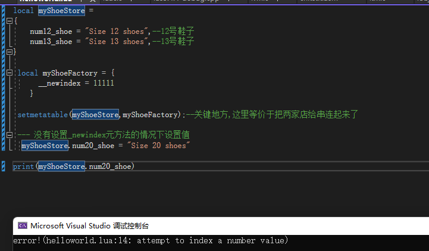
_元表没有_设置newindex的时候
local myShoeStore =
{
num12_shoe = "Size 12 shoes",--12号鞋子
num13_shoe = "Size 13 shoes",--13号鞋子
}
local myShoeFactory = {
}
setmetatable(myShoeStore,myShoeFactory);--关键地方,这里等价于把两家店给串连起来了
--- _元表没有_设置newindex的时候
myShoeStore.num20_shoe = "Size 20 shoes"
print(myShoeStore.num20_shoe)
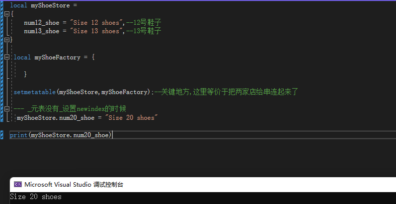
可以看到直接赋值了,还是有想要的结果输出
__newindex设置的是table
local myShoeStore =
{
num12_shoe = "Size 12 shoes",--12号鞋子
num13_shoe = "Size 13 shoes",--13号鞋子
}
local myShoeFactoryItem = {
num20_shoe = "Size 21 shoes"
}
local myShoeFactory = {
__newindex = myShoeFactoryItem
}
setmetatable(myShoeStore,myShoeFactory);--关键地方,这里等价于把两家店给串连起来了
print("set num20_shoe before myShoeFactoryItem.num20_shoe:",myShoeFactoryItem.num20_shoe)
myShoeStore.num20_shoe = "Size 20 shoes"
print("set num20_shoe after myShoeFactoryItem.num20_shoe:",myShoeFactoryItem.num20_shoe)
print(myShoeStore.num20_shoe)
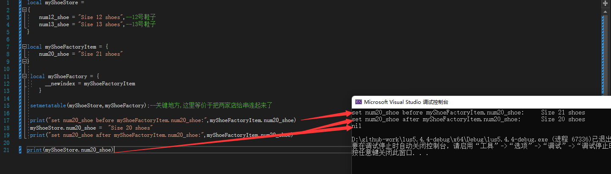
我们可以看到当修改myShoeFactoryItem中num20_shoe字段的之前他的值是"Size 21 shoes"
当调用 myShoeStore.num20_shoe = "Size 20 shoes"进行设置的时候
myShoeFactoryItem中num20_shoe字段的之前他的值变成了"Size 20 shoes"
而再次输出myShoeStore.num20_shoe的时候看到的值是nil
所以我们可以看到这东西有点像我的工厂正在产21号的鞋子,但是我这个时候紧急需要20号鞋子,我就隔空通过主店对工厂发出了创建20号鞋子的命令,但是主店却不会去创建20号鞋子,这样非常nice有点隔空打牛,但是不影响主店的意思在里面
__newindex设置的是函数
local myShoeStore =
{
num12_shoe = "Size 12 shoes",--12号鞋子
num13_shoe = "Size 13 shoes",--13号鞋子
}
local myShoeFactory = {
__newindex = function(table, key, value) --关键地方,靠的就是__newindex来进行鞋子的创建
rawset(table, key, value);--使用rawset来进行设置,因为不会去调用元方法对table进行设置,所以能得到更好的性能和避免元方法的无限递归调用
end
}
setmetatable(myShoeStore,myShoeFactory);--关键地方,这里等价于把两家店给串连起来了
--- 有元表的情况下设置值,这样等价于我把本来要在主店创建20号鞋子的任务,丢给我的鞋子工厂去处理了
myShoeStore.num20_shoe = "Size 20 shoes"
print(myShoeStore.num20_shoe)
这块地方废话就不多说了,可以自己对着注释捋一下就明白了,其实__newindex开场白的时候也进行了介绍
__gc
主要用来当对象被销毁时,该元方法将以对象作为参数进行调用,并对一些自定义的资源释放,可以将此元方法认为是一种析构函数也行,这个元方法指向的内容必须的是个函数
先来喵喵源代码
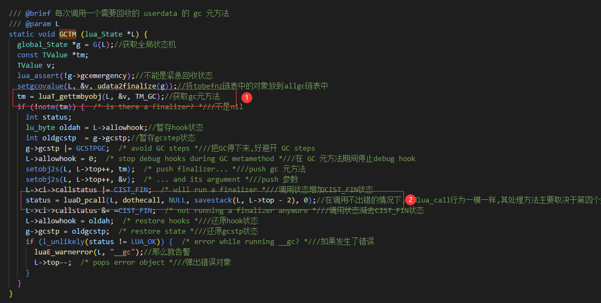
1号位置获取元方法2号位置调用你指向的函数,从调用的是luaD_pcall函数中可以看出,__gc元方法指向的必须是个函数
__gc指向的不是函数
local myShoeStore =
{
num12_shoe = "Size 12 shoes",--12号鞋子
num13_shoe = "Size 13 shoes",--13号鞋子
}
print("myShoeStore addr:",myShoeStore)--先打印下myShoeStore table地址
local myShoeFactoryGC = {
__gc =1111
}
setmetatable(myShoeStore,myShoeFactoryGC);
myShoeStore = nil --设置成nil,下面调用collectgarbage才会被回收
collectgarbage()-- 进行gc回收
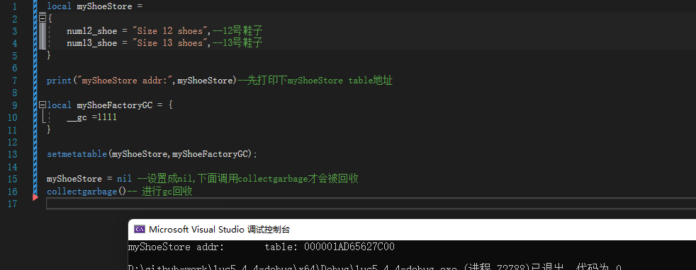
可以看到什么都没有发生
__gc指向的是函数
local myShoeStore =
{
num12_shoe = "Size 12 shoes",--12号鞋子
num13_shoe = "Size 13 shoes",--13号鞋子
}
print("myShoeStore addr:",myShoeStore)--先打印下myShoeStore table地址
local myShoeFactoryGC = {
__gc =function( table )
print("myShoeFactoryGC released table addr:",table) -- myShoeStore table被回收了
end
}
setmetatable(myShoeStore,myShoeFactoryGC);
myShoeStore = nil --设置成nil,下面调用collectgarbage才会被回收
collectgarbage()-- 进行gc回收
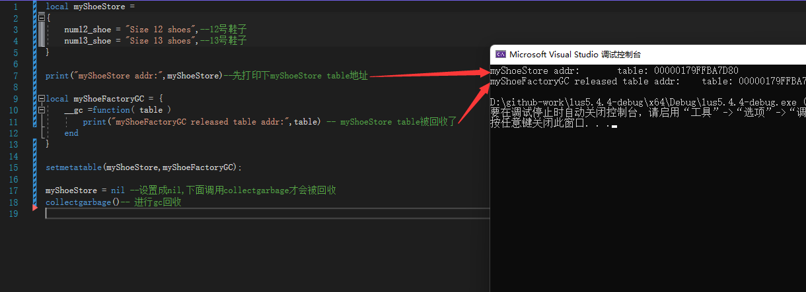
从上面我们能够看出当myShoeStore table被回收的时候,也会触发__gc的元方法,大白话来说就有点像我的主店倒闭了,那么和我关联的工厂也没有必要在给我进行关联,给我发鞋子什么的来我这卖了.
__mode
假设如果你的主店和你名下的分店有强引用关系,比如你欠了分店的预付款什么的,这个时候分店不想和你干了,按照法律来说及时分店自己关闭了,分店和你的劳动纠纷还是存在,你还是跑不了,毕竟强引用关系再次,但是如果你和分店在签订加盟合同的时候,说的是自负盈亏,如果主店付不出利润钱了,两个人也扯不上任何法律上的关系,这样分店自己关闭了,你也不用在负责任,这就有点像弱引用的关系
local myShoeStore =
{
num12_shoe = "Size 12 shoes",--12号鞋子
num13_shoe = "Size 13 shoes",--13号鞋子
}
local myBranchShoeStore = {
num20_shoe = "Size 20 shoes",--20号鞋子
num21_shoe = "Size 21 shoes",--21号鞋子
}
local contract = {} --两人在此建立合同
contract[1] = myShoeStore
contract[2] = myBranchShoeStore
myBranchShoeStore = nil --设置成nil,下面调用collectgarbage才会被回收
collectgarbage()-- 进行gc回收
for k,v in pairs(contract) do
print(k,v)
end
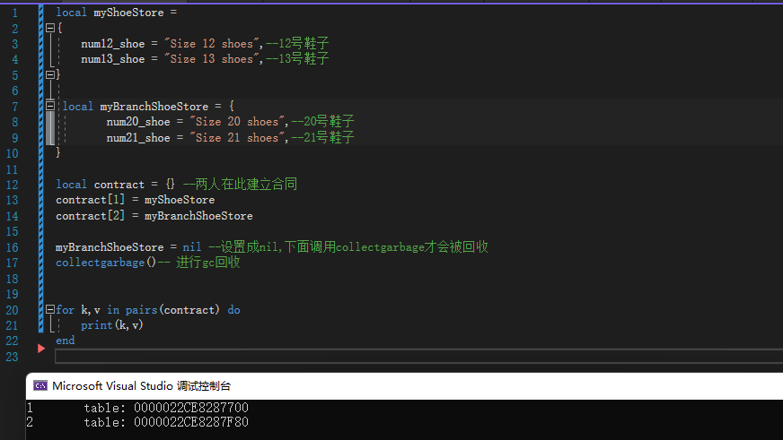
可以看到当两者建立合同并且没有设置弱引用的时候,myBranchShoeStore分店哪怕主动回收了,最后发现和myShoeStore主店有引用关系在,还是没有被回收
那么怎么解决这种情况呢,我们可以使用__mode来解决这个问题,
| 操作符 | 说明 |
|---|---|
| k | 表的key为弱引用 |
| v | 表的value为弱引用 |
| kv | 表的key,value都为弱引用 |
local myShoeStore =
{
num12_shoe = "Size 12 shoes",--12号鞋子
num13_shoe = "Size 13 shoes",--13号鞋子
}
local myBranchShoeStore = {
num20_shoe = "Size 20 shoes",--20号鞋子
num21_shoe = "Size 21 shoes",--21号鞋子
}
local contract = {} --两人在此建立合同
contract[1] = myShoeStore
contract[2] = myBranchShoeStore
for k,v in pairs(contract) do
print(k,v)
end
print("\n-------------collectgarbage after-----------------")
setmetatable(contract,{__mode="v"})--这个地方把value设置成了弱引用
myBranchShoeStore = nil --设置成nil,下面调用collectgarbage才会被回收
collectgarbage()-- 进行gc回收
for k,v in pairs(contract) do
print(k,v)
end
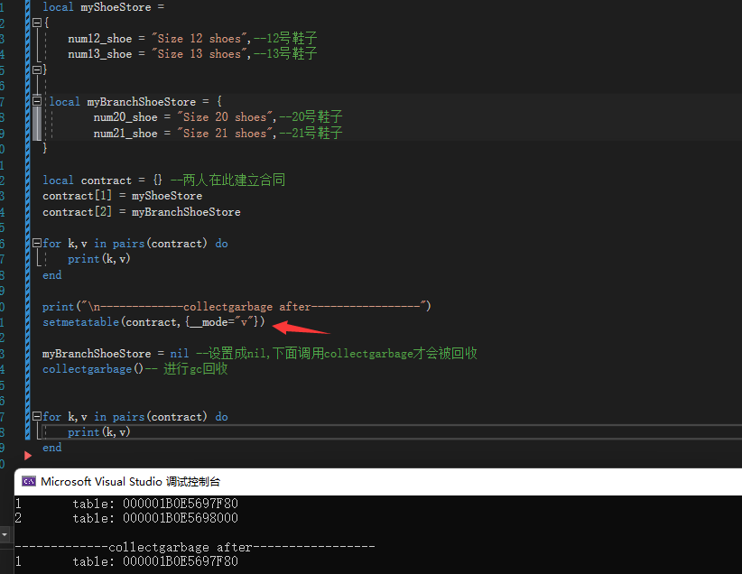
我们可以看到回收之前是2个table,而当调用myBranchShoeStore = nil ,collectgarbage()的时候,发现myBranchShoeStore 被回收了
入口源码剖析
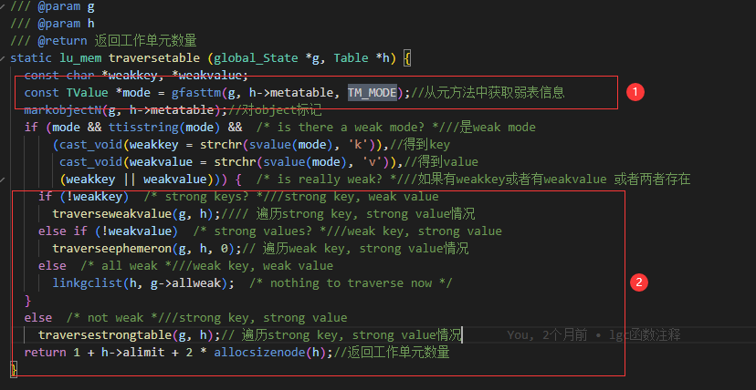
1号位置是从元表中获取元方法2号位置是根据设置的操作符是什么进行对应的gc回收
弱表原理剖析
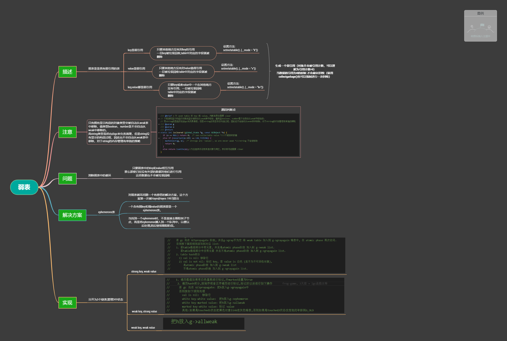
上面是弱表的原理剖析,大家可以把图片放大或者下载下来观看
弱表具体的相关源码太多了,这里就不一一展示了,感兴趣的可以去下面连接查找traverseweakvalue,traverseephemeron,traverseephemeron,traversetable四个主要函数进行观看,函数处也写了不少注释
__len
这个是用来求自定义长度使用的
例子
假如这个时候来了个顾客,顾客说你这有20码以上的鞋子吗,我的脚比较特殊需要都试试,如果你是店家但是因为没有使用信息化处理,看着满主店仓库堆满的鞋子,你是不是会很绝望,等你从仓库中翻出那些鞋子,估计顾客都跑掉了,所以这个时候我们就可以使用_len元方法来处理这个窘迫的问题
local myShoeStore =
{
num12_shoe = {12,"Size 12 shoes"},--12号鞋子
num13_shoe = {13,"Size 13 shoes"},--13号鞋子
num20_shoe = {20,"Size 20 shoes"},--20号鞋子
num21_shoe = {21,"Size 21 shoes"},--21号鞋子
num22_shoe = {22,"Size 22 shoes"},--22号鞋子
num23_shoe = {23,"Size 23 shoes"},--23号鞋子
}
local myShoeStoreLen ={
__len = function (table) --通过此处的计算直接把20号以上的鞋子都给统计出来
local len = 0
for k,v in pairs(table) do
if( 20 <= v[1]) then
len= len+ 1
end
end
return len;
end
}
setmetatable(myShoeStore, myShoeStoreLen);
print(#myShoeStore)--这个地方得到__len元方法统计的数据量大小
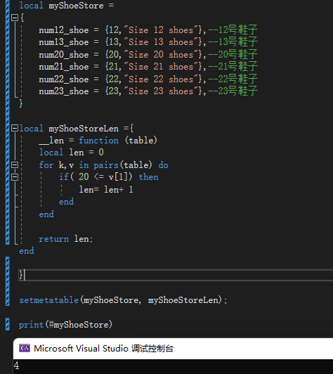
从上面结果我们可以看出,完美的得到了想要的数据
源码讲解
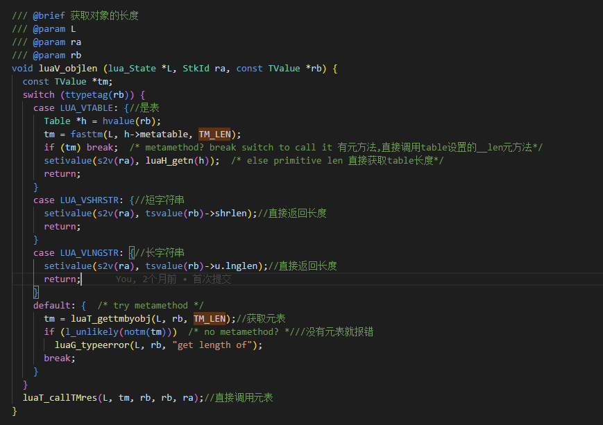
上面是当你是用#去求大小的时候,会更加你#后面跟的数据类型来判断怎么求大小
- 如果是
#table,那么就看一下是否设置了元方法,如果设置了走luaT_callTMres函数调用元方法求大小,否则通过luaH_getn函数求大小 - 如果是
#短字符串,直接通过tsvalue(rb)->shrlen返回大小 - 如果是
#长字符串,直接通过tsvalue(rb)->u.lnglen返回大小 - 如果是
#其他,那么就判断是否设置了元表如果设置了就通过luaT_callTMres函数调用元方法求大小,否则报错,这个其他比如是userdata等等
已经说道了这里那么就好好说下#table的时候通过luaH_getn函数求大小
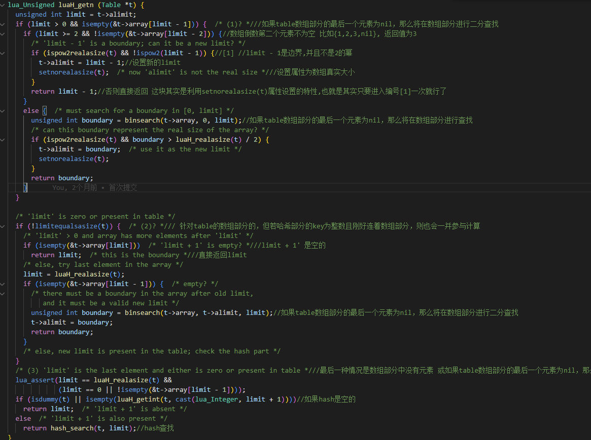
可以看到上面的内容还是挺蛋疼的,又是二分,又是边界什么什么的,不着急,我们慢慢嚼碎它
首先我们知道lua的table是分为数组和hash部分的
所以为了求出合适的大小lua会按如下规则来求大小,或者更简单点来说,lua用#求大小就是求table的边界
那么怎么求边界呢,边界又是针对什么的呢
-
边界是针对
table的数组部分的,但若哈希部分的key为整数且刚好连着数组部分,则也会一并参与计算 -
若某个整数下标
n,满足table[boundary]不为空,而table[boundary+1]为空,则n为table的边界table[boundary] != nil table[boundary+1] == nil
为了提高遍历查找边界的效率,lua源码并没有进行遍历查找,而是通过二分查找
-
如果
table数组部分的最后一个元素为nil,那么将在数组部分进行二分查找 -
针对
table的数组部分的,但若哈希部分的key为整数且刚好连着数组部分,则也会一并参与计算 -
最后一种情况是数组部分中没有元素 或如果
table数组部分的最后一个元素为nil,那么将在hash部分进行二分查找
用#求table长度的一些情况
全部为数组,没有hash部分
table的数组部分最后一个元素不是nil
例子1
local myShoeStore = {12,13,14,15,16,17}
print(#myShoeStore)
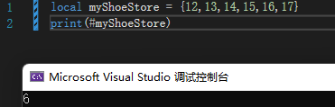
例子2
local myShoeStore = {12,nil,nil,nil,nil,17}
print(#myShoeStore)
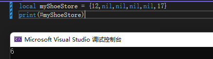
例子3
local myShoeStore = {nil,nil,nil,nil,nil,17}
print(#myShoeStore)
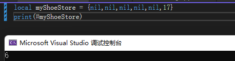
- 因为
table数组部分最后一位不是nil所以会跑到luaH_getn函数的这个地方,直接返回Table结构体里面的alimit字段大小
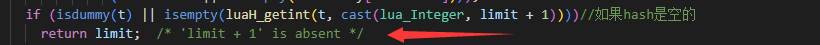
table的数组部分最后一个元素是nil,数组部分倒数第二个不是nil
例子1
local myShoeStore = {12,13,14,15,16,nil}
print(#myShoeStore)
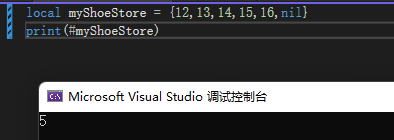
例子2
local myShoeStore = {12,nil,nil,nil,16,nil}
print(#myShoeStore)
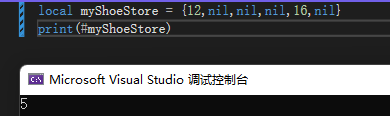
例子3
local myShoeStore = {nil,nil,nil,nil,16,nil}
print(#myShoeStore)
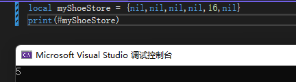
- 因为数组部分最后一个元素为
nil,数组部分倒数第二个不是nil,那么就直接返回Table结构体里面的alimit字段大小减1
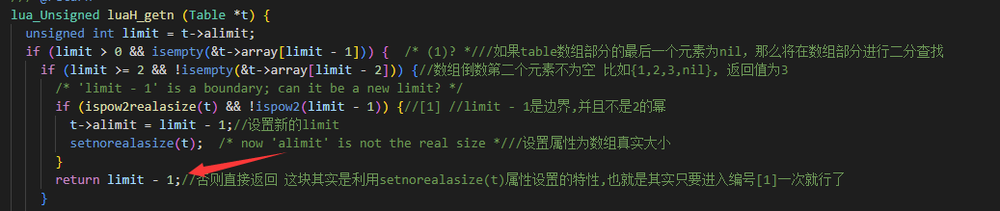
table的数组部分最后一个元素是nil,数组部分倒数第二个也是nil
关键源码部分
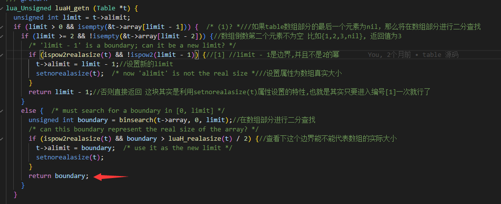
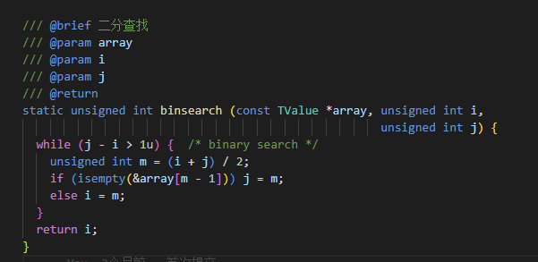
例子1
local myShoeStore = {12,13,14,15,nil,nil}
print(#myShoeStore)
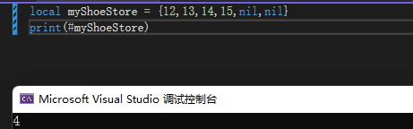
简单说下例子1进入二分查找的运算过程
第一轮 i = 0；j = 6；判断j - i > 1；进入white循环
第二轮 i = 0；j = 6；m = (i + j) / 2 = 3；判断array[m - 1]是不是空,不为空; i=m=3；判断j - i > 1；进入white循环
第三轮 i = 3；j = 6；m = (i + j) / 2 = 4；判断array[m - 1]是不是空,不为空; i=m=4；判断j - i > 1；进入white循环
第四轮 i = 4；j = 6；m = (i + j) / 2 = 5；判断array[m - 1]是不是空,为空; j=m=5；判断j - i 不大于1；退出循环,并返回i值
例子2
local myShoeStore = {12,13,nil,nil,nil,nil}
print(#myShoeStore)
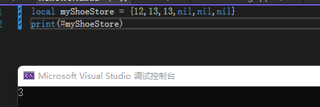
例子3
local myShoeStore = {12,13,nil,nil,nil,nil}
print(#myShoeStore)
- 因为数组部分最后一个元素为
nil,数组部分倒数第二个也是nil所以直接调用binsearch函数在数组部分进行二分查找得到table大小
通过上面两个极端的例子,所以我们看到table只看数组部分最后两位的情况来决定什么样的逻辑处理
1. 如果数组部分最后一位不是`nil`,那么就直接返回`Table`结构体里面的`alimit`字段大小
1. 如果最后一个元素是`nil`,数组部分倒数第二个不是`nil`,那么就直接返回`Table`结构体里面的`alimit`字段大小减`1`
1. 如果数组部分最后一个元素为`nil`,数组部分倒数第二个也是`nil`所以直接调用`binsearch`函数在数组部分进行二分查找,得到`table`大小
全部为hash,没有数组
local myShoeStore =
{
[1] = "Size 12 shoes",--12号鞋子
[3] = "Size 20 shoes",--20号鞋子
[4] = "Size 21 shoes",--21号鞋子
[5] = "Size 22 shoes",--22号鞋子
[6] = "Size 23 shoes",--23号鞋子
}
print(#myShoeStore)
关键源码部分
t没有数组元素,调用hash_search函数,hash部分从j = 1开始遍历,i记录的是上一个j的值
第一轮 i = 1; j = 2; t[2] 为nil 然后j - i 不大于1 所以直接返回i也就是大小1
在举个触发二分查找的例子
local myShoeStore =
{
[1] = "Size 12 shoes",--12号鞋子
[2] = "Size 13 shoes",--13号鞋子
[3] = "Size 20 shoes",--20号鞋子
[4] = "Size 21 shoes",--21号鞋子
[6] = "Size 23 shoes",--23号鞋子
}
print(#myShoeStore)
t没有数组元素,调用hash_search函数,hash部分从j = 1开始遍历,i记录的是上一个j的值
第一轮 i = 1; j = 2; t[2]不为nil；继续下一轮white循环
第二轮 i = 2; j = 4; t[4]不为nil；继续下一轮white循环
第三轮 i = 4; j = 8; t[8]为nil并且j - i > 1； 进入二分查找阶段
第四轮 i = 4; j = 8; m = (i + j) / 2 = 6; t[m]不为空设置i = 6；判断j - i > 1;继续下一轮二分查找
第五轮 i = 6; j = 8；m = (i + j) / 2 = 7; t[m]为空设置j = 7; 判断j - i 不大于1 结束二分查找返回i的值为6
有hash有数组的情况
有数组部分并且和hash部分下标连贯的
local myShoeStore =
{
"Size 12 shoes",--12号鞋子
"Size 13 shoes",--13号鞋子
[3] = "Size 20 shoes",--20号鞋子
[4] = "Size 21 shoes",--21号鞋子
[5] = "Size 23 shoes",--23号鞋子
}
print(#myShoeStore)
我们可以看到大小就是数组部分的大小2加上hash部分的大小3总共为5
模拟一下过程因为数组部分大小是2,所以j等于2
第一轮 i = 2; j = 4; t[4]不为nil；继续下一轮white循环
第二轮 i = 4; j = 8; t[8]为nil；跳出white循环;判断j - i 是否大于1;发现大于;进入二分查找
第三轮 i = 4; j = 8; m = (i + j) / 2 = 6；t[m]为nil；j=m=6；判断j - i 是否大于1 发现大于,继续下一轮二分查找
第四轮 i = 4; j = 6；m = (i + j) / 2 = 5; t[m]不为nil i=m=5; 判断j - i 是否大于1 发现是等于1不符合条件,跳出循环,返回i,也就是5
有数组部分并且和hash部分下标不连贯的
local myShoeStore =
{
"Size 12 shoes",--12号鞋子
"Size 13 shoes",--13号鞋子
[4] = "Size 21 shoes",--21号鞋子
[5] = "Size 23 shoes",--23号鞋子
}
print(#myShoeStore)
可以看到上面因为不连贯直接值返回了数组的长度,并没有加上hash的长度,主要原因还是源码的这个地方调用luaH_getint函数返回了absentkey
#table求大小总结
所以从上面的各种分析能看出来,一般的情况下,如果这个表结构并不是按数字1~N顺序递增的，那么#table取出来的大小可能会是一些奇怪的值,所以建议用如下API接口来求大小
function table.length(t)
local i = 0
for k, v in pairs(t) do
i = i + 1
end
return i
end
运算符重载
我们可以看到一共有18中符号能够参与运算符重载
| C枚举 | 元方法名字 | 解释 |
|---|---|---|
| TM_EQ | __eq | 对应运算符"==“比较两个对象是否相等 |
| TM_ADD | __add | 对应运算符”+"（加法）操作 |
| TM_SUB | __sub | 对应的运算符 ‘-’（减法）操作 |
| TM_MUL | __mul | 对应运算符"*"（乘法）操作 |
| TM_MOD | __mod | 对应运算符"%"（取模）操作 |
| TM_POW | __pow | 对应运算符"^"（次方）操作 |
| TM_DIV | __div | 对应运算符"/"（除法）操作 |
| TM_IDIV | __idiv | 对应运算符"//"（向下取整除法）操作 |
| TM_BAND | __band | 对应运算符"&"（按位与）操作 |
| TM_BOR | __bor | 对应运算符"|"（按位或）操作 |
| TM_BXOR | __bxor | 对应运算符"^"（按位异或）操作 |
| TM_SHL | __shl | 对应运算符"«"（左移）操作 |
| TM_SHR | __shr | 对应运算符"»"（右移）操作 |
| TM_UNM | __unm | 对应的运算符 ‘-’（取负）操作 |
| TM_BNOT | __bnot | 对应运算符"~"（按位非）操作 |
| TM_LT | __lt | 对应的运算符 ‘<’（小于）操作 |
| TM_LE | __le | 对应的运算符 ‘<=’（小于等于）操作 |
| TM_CONCAT | __concat | 对应的运算符 ‘..’(连接）操作 |
终于到了月底盘点的日子了,为了能更好的管理店面进行盘点,需要对很多数据进行加加减减,取模,等等,这个时候就可以用上我们的lua的18个元方法,进行运算符重载
__eq
作用:比较两个对象是否相等
下面例子比较一下主店和分店各自销售记录量是不是一样
local myShoeStore =
{
{"Size 12 shoes",50,20},--鞋子类型,销售额,数量
{"Size 13 shoes",50,80},--鞋子类型,销售额,数量
{"Size 14 shoes",80,80},--鞋子类型,销售额,数量
}
local myBranchShoeStore = {
{"Size 20 shoes",50,40},--鞋子类型,销售额,数量
{"Size 21 shoes",50,80},--鞋子类型,销售额,数量
}
--盘点操作用来做Metatable
inventoryOpe = {}
--定义相等操作来比较一下主店和分店各自销售量是不是一样
inventoryOpe.__eq = function(table1, table2)
return #table1 == #table2
end
setmetatable(myShoeStore, inventoryOpe)
--比较一下主店和分店各自销售量是不是一样
local isSame = myShoeStore == myBranchShoeStore
print(isSame)
我们可以看到返回了false说明两家店销售记录量不一样
__mul
作用:做乘法操作
统计下主店和分店一共挣了多少钱
local myShoeStore =
{
{"Size 12 shoes",50,20},--鞋子类型,销售额,数量
{"Size 13 shoes",50,80},--鞋子类型,销售额,数量
{"Size 14 shoes",80,80},--鞋子类型,销售额,数量
}
local myBranchShoeStore = {
{"Size 20 shoes",50,40},--鞋子类型,销售额,数量
{"Size 21 shoes",50,80},--鞋子类型,销售额,数量
}
--盘点操作用来做Metatable
inventoryOpe = {}
--定义乘法操作来统计下主店和分店一共挣了多少钱
inventoryOpe.__mul = function(table1, table2)
local money = 0
for _,v in pairs(table1) do
money = money + (v[2] * v[3])
end
for _,v in pairs(table2) do
money = money + (v[2] * v[3])
end
return money
end
setmetatable(myShoeStore, inventoryOpe)
--统计下主店和分店一共挣了多少钱
local money = myShoeStore * myBranchShoeStore
print(money)
可以看到总的money算出来了一共17400元
__add
作用:用来进行加法操作
举个栗子比如下面用来统计主店和分店总的销售物品信息
local myShoeStore =
{
{"Size 12 shoes",50,20},--鞋子类型,销售额,数量
{"Size 13 shoes",50,80},--鞋子类型,销售额,数量
{"Size 14 shoes",80,80},--鞋子类型,销售额,数量
}
local myBranchShoeStore = {
{"Size 20 shoes",50,40},--鞋子类型,销售额,数量
{"Size 21 shoes",50,80},--鞋子类型,销售额,数量
}
--盘点操作用来做Metatable
inventoryOpe = {}
--定义加法操作用来统计主店和分店的销售数据
inventoryOpe.__add = function(table1, table2)
for _, value in pairs(table2) do
table.insert(table1, value)
end
return table1
end
setmetatable(myShoeStore, inventoryOpe)
--统计主店和分店总的销售数据
local totalShoeInfo = myShoeStore + myBranchShoeStore
--输出一下结果
for k,v in pairs(totalShoeInfo) do
local item = ""
for i=1,3 do
if i ~= 3 then
item = item .. v[i] .. ","
else
item = item .. v[i]
end
end
print("{" .. item .. "}")
end
从结果上看,我们已经完美的把两家店的数据都统计合在一块了
其他的运算符重载就不在举例了,和上面列出来的3个例子非常雷同
__call
作用:当table名字做为函数名字的形式被调用的时候,会调用__call函数
查看下主店每日完成金额量差距
local myShoeStore =
{
{"Size 12 shoes",50,20},--鞋子类型,销售额,数量
{"Size 13 shoes",50,80},--鞋子类型,销售额,数量
{"Size 14 shoes",80,80},--鞋子类型,销售额,数量
}
--盘点操作用来做Metatable
inventoryOpe = {}
--定义函数调用操作来查看下每日完成金额量差距
inventoryOpe.__call = function(self,target)
local num14 = 0
for _,v in pairs(self) do
num14 = num14 + (v[2] * v[3])
end
return target - num14
end
setmetatable(myShoeStore, inventoryOpe)
--查看下主店每日完成金额量差距
print(myShoeStore(10000))--假设需要每日完成10000金额的销售量
我们可以看到每日目标金额已经超额完成,并且超了1400块
__close
例子
作用:被标记为to-be-closed的局部变量会在超出它的作用域时,调用它的__closed元方法
close变量To-be-closed Variables需要和close元方法结合使用，在变量超出作用域时，会调用变量的close元方法__close,close变量一般用于需要及时释放的资源的情况,多用这个其实也能减轻gc的负担
当店铺晚上关门的时候能自动把店铺的灯关闭
local myShoeStore =
{
{"Size 12 shoes",50,20},--鞋子类型,销售额,数量
{"Size 13 shoes",50,80},--鞋子类型,销售额,数量
{"Size 14 shoes",80,80},--鞋子类型,销售额,数量
light = true, --灯开着
}
--盘点操作用来做Metatable
inventoryOpe = {}
--定义__close操作当店铺晚上关门的时候能自动把店铺的灯关闭
inventoryOpe.__close = function(self)
self.light = false
end
setmetatable(myShoeStore, inventoryOpe)
--当主店铺晚上关门的时候能自动把店铺的灯关闭
do
local closeStore <close> = myShoeStore
end
print(myShoeStore.light)
源码分析
我们可以看到有两个核心函数一个是callclosemethod和checkclosemth
callclosemethod主要就是用来调用设置的元方法checkclosemth这个主要是用来检测是否设置好了元方法,如果没有设置的话就会报错
更详细的注释请去我的GitHub地址
以下是我几乎每行都加了注释的GitHub地址